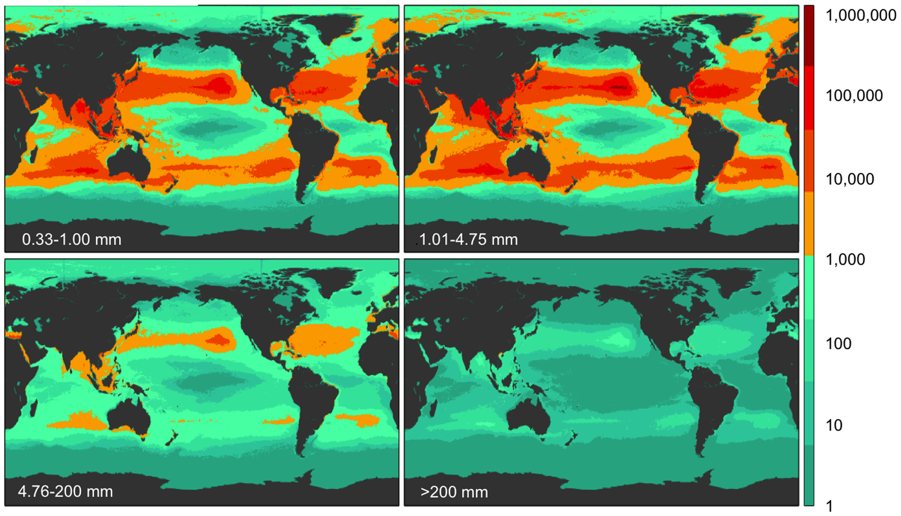

Five Trillion Plastic Pieces
Plastic Pollution in the World's Oceans: More than 5 Trillion Plastic Pieces Weighing over 250,000 Tons Afloat at Sea
The Modelling House provided expertise in data modelling and analysis during an international research effort aiming at giving a first global estimate of the quantity of plastic floating in the ocean. We co-authored a publication that received an important coverage worldwide. Our model predicted over 5 trillion plastic pieces in the world’s ocean. This figure is now regularly referenced in journal articles and international medias.
Abstract:
Plastic pollution is ubiquitous throughout the marine environment,
yet estimates of the global abundance and weight of floating plastics
have lacked data, particularly from the Southern Hemisphere and
remote regions. Here we report an estimate of the total number of
plastic particles and their weight floating in the world's oceans
from 24 expeditions (2007–2013) across all five sub-tropical gyres,
coastal Australia, Bay of Bengal and the Mediterranean Sea conducting
surface net tows (N=680) and visual survey transects of large plastic
debris (N=891). Using an oceanographic model of floating debris
dispersal calibrated by our data, and correcting for wind-driven
vertical mixing, we estimate a minimum of 5.25 trillion particles
weighing 268,940 tons. When comparing between four size classes,
two microplastic <4.75 mm and meso- and macroplastic >4.75 mm, a
tremendous loss of microplastics is observed from the sea surface
compared to expected rates of fragmentation, suggesting there are
mechanisms at play that remove <4.75 mm plastic particles from the
ocean surface.
The publication was supported by an interactive geo-spatial visualisation which details the outcomes of the analysis. The application has had over a 100,000 unique visitors since its launch in late 2014 and proved to be a powerful communication tool of scientific insights.
Global modelled weight density in four debris size classes.
Global modelled count density in four debris size classes.